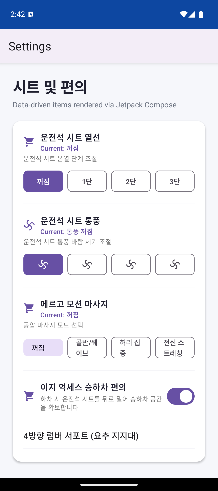
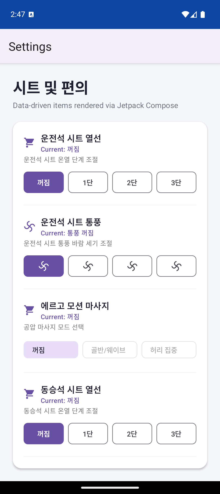
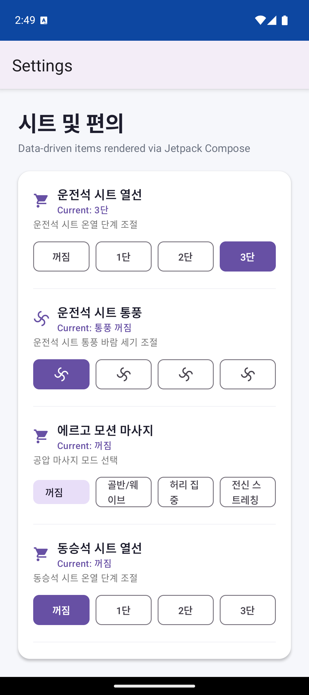
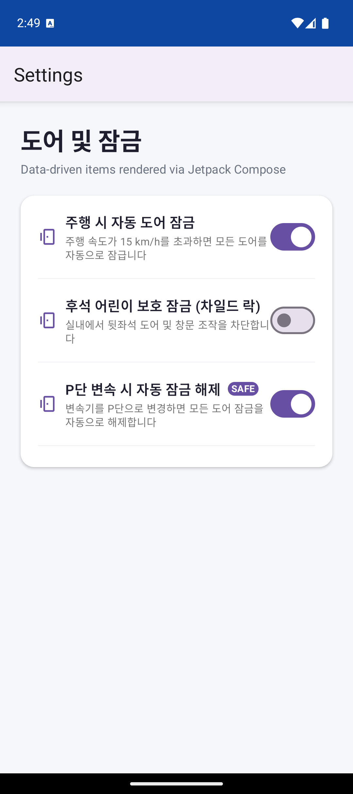
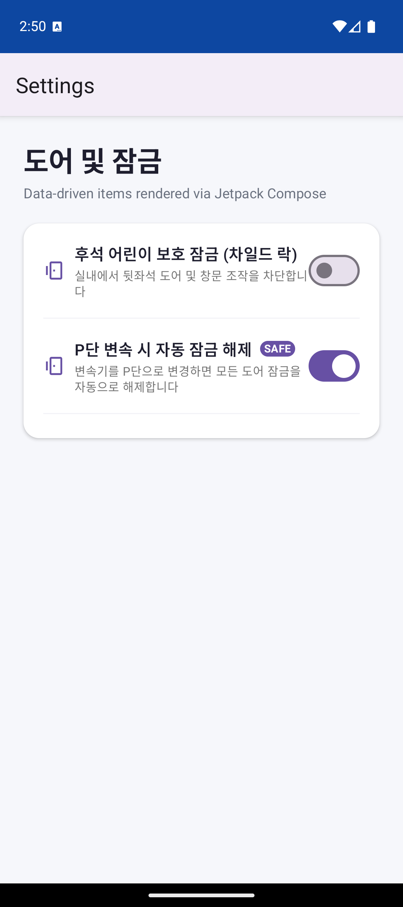

VHAL 하드웨어 센서(탑승자 감지, 주행 속도, HAL 프로퍼티)의 변경 사항을 adb shell am broadcast로 주입하고,
Jetpack Compose 설정 화면에서 Item.isVisible, ValueWithState.isEnabled, ValueWithState.isVisible,
ValueWithState.isSelected가 실시간으로 재구성(Recomposition)되는 결과를 검증한 리포트 및 수동 테스트 가이드입니다.
개발자나 QA 엔지니어가 물리적 차량 장비 없이도 터미널 명령어 한 줄로 모든 하드웨어 상태와 UI 엣지 케이스를 테스트할 수 있도록 설계되었습니다.
com.example.carsettings.SIMULATE_HARDWARE Intent 액션을 수신하여 파라미터 파싱StateFlow(탑승자 감지, 주행 락아웃, 옵션 숨김) 값 갱신combine()을 통해 ValueWithState(isSelected, isEnabled, isVisible) 리스트를 원자적으로 방출LocalItemViewModelRegistry를 구독하여 Item 전체 또는 개별 Option 칩이 즉각 리컴포지션adb shell am start -n com.example.lifecycleapp/.GenericSettingsActivity -a com.example.carsettings.seat.OPEN
adb shell am broadcast -a com.example.carsettings.SIMULATE_HARDWARE -p com.example.lifecycleapp --ez passenger_present false
adb shell am broadcast -a com.example.carsettings.SIMULATE_HARDWARE -p com.example.lifecycleapp --ez passenger_present true

adb shell am broadcast -a com.example.carsettings.SIMULATE_HARDWARE -p com.example.lifecycleapp --ei speed 60
adb shell am broadcast -a com.example.carsettings.SIMULATE_HARDWARE -p com.example.lifecycleapp --ei speed 0
adb shell am broadcast -a com.example.carsettings.SIMULATE_HARDWARE -p com.example.lifecycleapp --es item seat_massage --es hide_options STRETCH
adb shell am broadcast -a com.example.carsettings.SIMULATE_HARDWARE -p com.example.lifecycleapp --es item seat_massage --es hide_options none

adb shell am broadcast -a com.example.carsettings.SIMULATE_HARDWARE -p com.example.lifecycleapp --es item driver_seat_heat --es value '\"LEVEL 3\"'
adb shell am broadcast -a com.example.carsettings.SIMULATE_HARDWARE -p com.example.lifecycleapp --es item driver_seat_heat --es value OFF

adb shell am start -n com.example.lifecycleapp/.GenericSettingsActivity -a com.example.carsettings.door.OPEN
adb shell am broadcast -a com.example.carsettings.SIMULATE_HARDWARE -p com.example.lifecycleapp --es item auto_lock --ez visible false
adb shell am broadcast -a com.example.carsettings.SIMULATE_HARDWARE -p com.example.lifecycleapp --es item auto_lock --ez visible true


| 상태 | 시나리오 | 검증 내용 | 타겟 상태 | 결과 |
|---|---|---|---|---|
| 동승석 탑승자 미착석 | --ez passenger_present false 전송 시 '동승석 시트 열선'이 UI 트리에서 완전히 사라지는지 확인 |
Item.isVisible |
PASS | |
| 동승석 탑승자 재착석 | --ez passenger_present true 전송 시 '동승석 시트 열선'이 원래 위치로 복원되는지 확인 |
Item.isVisible |
PASS | |
| 주행 속도 60km/h 락아웃 | --ei speed 60 전송 시 마사지 모드의 위험 3개 옵션이 Grayed-out 비활성화되고 클릭이 차단되는지 확인 |
ValueWithState.isEnabled |
PASS | |
| 정차 시 락아웃 해제 | --ei speed 0 전송 시 마사지 모드의 모든 옵션이 다시 활성화되는지 확인 |
ValueWithState.isEnabled |
PASS | |
| 마사지 특정 옵션 숨김 | --es hide_options STRETCH 전송 시 '전신 스트레칭' 칩만 사라지고 3개 칩만 남는지 확인 |
ValueWithState.isVisible |
PASS | |
| 열선 3단 외부 변경 | --es item driver_seat_heat --es value '\"LEVEL 3\"' 전송 시 세그먼트 버튼과 'Current' 라벨이 3단으로 동기화되는지 확인 |
ValueWithState.isSelected |
PASS | |
| 도어 자동 잠금 토글 숨김 | --es item auto_lock --ez visible false 전송 시 '주행 시 자동 도어 잠금' 토글이 사라지는지 확인 |
UiToggleItem.isVisible |
PASS |